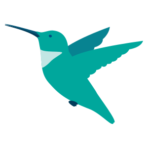

under the same sky
Each bird below represents the stories of struggle, joy, and gratitude of various immigrant women. Their stories often go unheard, but through the voices provided by this platform, they hope to reach your ears and offer you a moment of learning of their past, present, and futures.
Click on one of the birds below to start your journey.
- 
-

-

the hummingbird
content warnings: deportation
Mexico to U.S.A.
The hummingbird's story starts in the island of Sulawesi. This was the place the hummingbird called home and where she grew up. Although the hummingbird's family was poor, they still had plenty of joy and happiness to share with each other.
However, despite how hard her family worked to make ends meet, it became increasingly difficult to provide basic needs to everyone, especially after the death of her father.
The hummingbird had heard stories from other young women in her community about how others were immigrating to America with work visas and found well-paying jobs that weren't available for women in Sulawesi. The hummingbird understood that sacrifices were to be made and she decided to immigrate to America in order to find work and help support her family. Upon coming to America, the hummingbird soon found that the streets were not paved in gold, nor was there any prosperity for anyone like her, but still, she was optimistic.
She found work through a friend, first as a maid and later as a home care assistant for the disabled. The work was difficult and long, but she made more money than she ever could if she had stayed at home. The hummingbird planned to stay in America for several more years in order to get her family to a more stable place, but this plan all changed when she became pregnant.
The hummingbird was scared and unsure of her future. She wanted to go back home to her family, but she knew that if she went back, her child wouldn't have access to education or safety like in America. America had never been kind to her; this country and its people treated her like she was disposable, took advantage of her labor, and subjected her to all kinds of sexism, xenophobia, and racism. However, the hummingbird knew that although America did not treat her well, perhaps it would be different for her children. After much pain and deliberation, she decided to stay.
She overstayed her work visa and out of fear that she would be deported if she tried to renew it, she became undocumented. To this day, the hummingbird still longs to see her family back in Sulawesi again, but feels trapped in a country that adamantly calls for the deportation of women like her. Despite the struggles she endured, the hummingbird never regretted putting her children before her, and she is now the proud mother of two soon-to-be college graduates.
the eagle-hawk
content warnings: deportation
Indonesia to U.S.A.
The hummingbird's story starts in the island of Sulawesi. This was the place the hummingbird called home and where she grew up. Although the hummingbird's family was poor, they still had plenty of joy and happiness to share with each other.
However, despite how hard her family worked to make ends meet, it became increasingly difficult to provide basic needs to everyone, especially after the death of her father.
The hummingbird had heard stories from other young women in her community about how others were immigrating to America with work visas and found well-paying jobs that weren't available for women in Sulawesi. The hummingbird understood that sacrifices were to be made and she decided to immigrate to America in order to find work and help support her family. Upon coming to America, the hummingbird soon found that the streets were not paved in gold, nor was there any prosperity for anyone like her, but still, she was optimistic.
She found work through a friend, first as a maid and later as a home care assistant for the disabled. The work was difficult and long, but she made more money than she ever could if she had stayed at home. The hummingbird planned to stay in America for several more years in order to get her family to a more stable place, but this plan all changed when she became pregnant.
The hummingbird was scared and unsure of her future. She wanted to go back home to her family, but she knew that if she went back, her child wouldn't have access to education or safety like in America. America had never been kind to her; this country and its people treated her like she was disposable, took advantage of her labor, and subjected her to all kinds of sexism, xenophobia, and racism. However, the hummingbird knew that although America did not treat her well, perhaps it would be different for her children. After much pain and deliberation, she decided to stay.
She overstayed her work visa and out of fear that she would be deported if she tried to renew it, she became undocumented. To this day, the hummingbird still longs to see her family back in Sulawesi again, but feels trapped in a country that adamantly calls for the deportation of women like her. Despite the struggles she endured, the hummingbird never regretted putting her children before her, and she is now the proud mother of two soon-to-be college graduates.
the swallow
content warnings: none
Philippines to U.S.A.
The Swallow was born in the Philippines with a scattered family. Her mother and father were still married but had separated. Despite being the middle child, she did not experience much of what that meant - all her siblings lived apart from her as they were all living with different family relatives.
She then met her future husband while working at a Panasonic factory. After a couple of years, they got married and had a child. She gave birth without him as he was working abroad at the time. Her parents were non-existent in her life growing up until her mom found out that she had a child and she had asked her ‘help’ in exchange for money which her mother then exploited.
It took six and a half years of raising their child as a single-mom before the Swallow's husband was able to bring the both of them to the States. While their child was automatically granted citizenship, the Swallow had to go through another route to get her citizenship. While she worked on another production line in the States, she also took night classes at the local community college to work on her AA degree in accounting.
Despite only having an AA degree, the Swallow was able to rise through the corporate ladder in the finance department of the medical company she was working for. Through hard work and perseverance, she was able to become a Senior Accountant, a position that usually requires a BS degree to get. However, when the company filed for bankruptcy and she was forced to find another work location that could provide her with a similar position without having the necessary “education” requirements.
After several jobs in companies that limited the scope of her abilities, the Swallow landed another position at another medical company that was closer to where she had lived. There, she was able to have an environment in which she could thrive without the judgement of not having the same higher education experience as some of her co-workers with the same position. It didn’t take long until she was promoted to an Accounting Manager, a position that requires a Master’s degree.
She was humble the entire time, refusing promotions and bonuses because she felt that she did not deserve them due to her limited English skills and lack of a degree. She knows that she could not credit all of her successes to hard work alone. Without the right connections and luck that is needed to move up in the States, she knew that she could not credit all of her success to hard work alone when so many other immigrants were working just as hard yet not bearing the same outcome.
about under the sky
this project is a creative platform for audiences to learn more about the struggles of immigrant women using motifs of the sky and birds. This project hopes to give immigrant women a voice to share their experiences and to help those outside of their communities to become more educated about issues that these women face.
If you want to learn more about how to better support these women, visit the Immigration Center for Women and Children to learn more.
If you or a loved one would like to submit a story of your own to be displayed on this platform, submit your story through our form here.
share your story
We encourage immigrant women and/or their loved ones to submit their stories and feel validated in their truths. Fill out the form below to submit your story for our team to review. Additional interviews